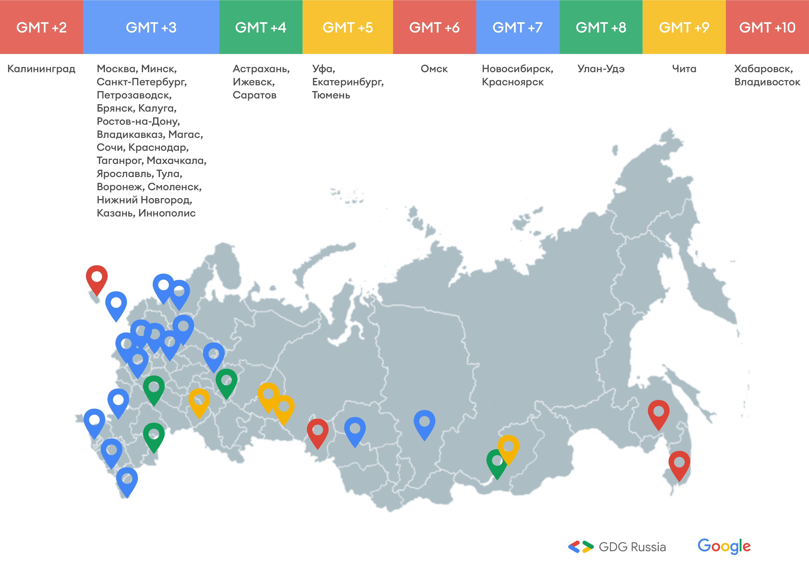

<!DOCTYPE html>
<html>
<head>
    <meta charset="utf-8">
    <meta name="viewport" content="width=device-width, initial-scale=1">
    <title>Самоизоляция</title>

    <!-- update the version number as needed -->
    <script defer src="/__/firebase/7.15.5/firebase-app.js"></script>
    <!-- include only the Firebase features as you need -->
    <script defer src="/__/firebase/7.15.5/firebase-auth.js"></script>
    <script defer src="/__/firebase/7.15.5/firebase-firestore.js"></script>
    <!-- initialize the SDK after all desired features are loaded -->
    <script defer src="/__/firebase/init.js"></script>

    <style media="screen">

    </style>
</head>
<body>
<script type="module">
    import {html, render} from 'https://unpkg.com/lit-html?module';

    const distance = (a,b) =>{
        return Math.hypot(a.x - b.x, a.y - b.y )
    }

    async function init() {

        const state = {
            title: 'Самоизоляция!!!',
            uid: (await firebase.auth().signInAnonymously()).user.uid,
            myMove: {},
            points: [],
        };
        const moves = firebase.firestore().collection('moves');
        const myMove = moves.doc(state.uid);

        function moveMe({offsetX: x, offsetY: y}) {
            myMove.set({x, y, uid: state.uid});
        }

        myMove.onSnapshot(s => {
            state.myMove = s.data() || state.myMove;
            rerender();
        });

        moves.onSnapshot(s => {
            const points = s.docs.map(d => d.data());
            state.points = points.map(p => ({
                ...p,
                min: Math.min(...points.map(p2 => distance(p, p2)).filter(m => m > 0))
            })).sort((a,b)=>b.min - a.min)


            rerender();
        });

        function getHtml() {
            return html`
      <h1> ${state.title}</h1>
      <h2>${state.uid}</h2>
      <div class="wrapper" style="border: 1px #000 solid;position:relative;width: 700px">
        
          ${state.points.map((p, i) => html`
        <div style="position: absolute;
                left: ${p.x}px; top: ${p.y}px;margin-left:-10px;margin-top: -13px;">🦊${i}</div>`)}
          ${state.myMove.x !== undefined ? html`
            <div style="position: absolute;left: ${state.myMove.x}px; top: ${state.myMove.y}px;margin-left:-10px;margin-top: -13px;">🔥</div>
          ` : ''}
      </div>


          ${state.points.map(p => html`
        <div>${p.min}, ${p.uid}</div>`)}

    `;
        }

        function rerender() {
            render(getHtml(), document.body);
        }

        rerender();
    }

    init();
</script>

</body>
</html>

